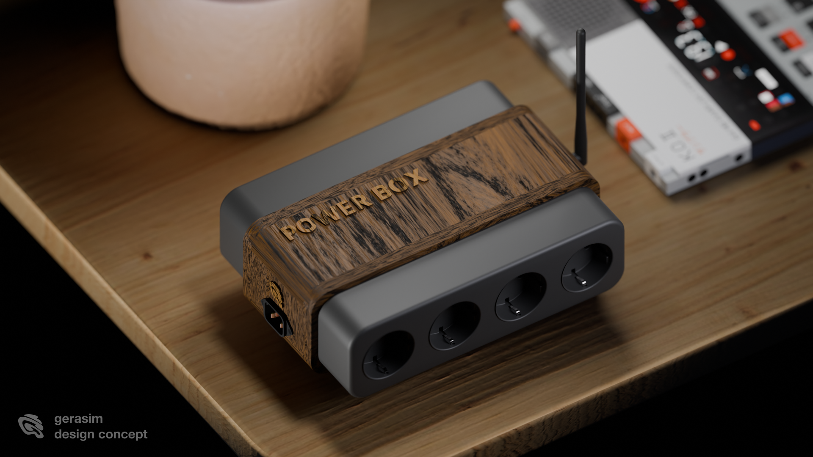
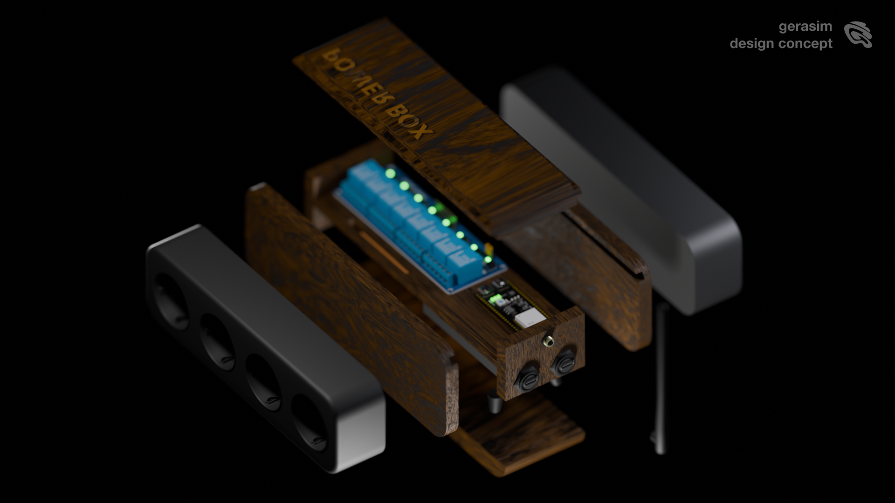
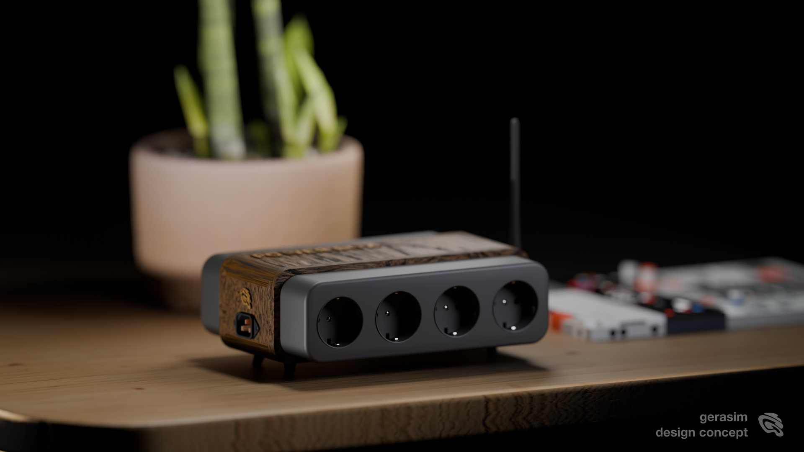

Универсальная коробка управления питанием: 8 каналов 220V для света, инсталляций, сценографии и живых медиа-сцен.
PowerBox превращает обычные электрические устройства в управляемые элементы инсталляции: лампы, LED-блоки питания, дым, моторы, световые объекты и сценографию.

8 розеток сразу готовы к управлению без сборки отдельной схемы под каждый объект.
Свет может включаться, пульсировать, реагировать на сценарий, музыку или TouchDesigner.
Прошивки, TD-патчи, схемы и документация хранятся в одном репозитории.

В site-specific проектах коробка становится скрытым техническим слоем: она синхронизирует свет, дым, питание и реакции объектов, позволяя ландшафту вести себя как активная система.
Legacy-версия: ESP8266 D1 + 8-канальный релейный модуль 12V с опторазвязкой. Новая версия: ESP32‑S3‑DevKitC‑1 N16R8 с U.FL/IPEX для внешней антенны + тот же тип реле 8 каналов 12V, 220V 10A по паспорту модуля.
